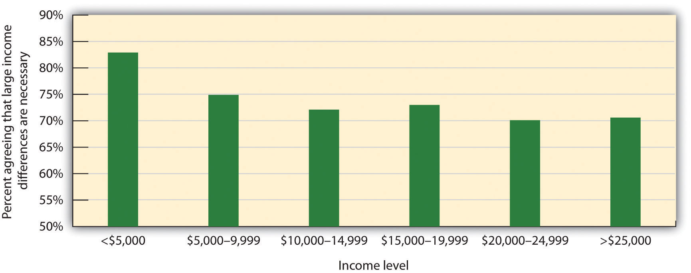

Whether we cooperate or compete is determined, as are most human behaviors, in part by the characteristics of the individuals who are involved in the relationship and in part by the social situation that surrounds them. Let’s begin by considering first the situational determinants of competition and conflict.
Conflict between individuals, between groups, and even between individuals and the social groups they belong to is a common part of our social worlds. We compete with other students to get better grades, and nations fight wars to gain territory and advantage. Businesses engage in competitive practices, sometimes in a very assertive manner, to gain market share. The behaviors of the parties that are in conflict are not necessarily designed to harm the others but rather are the result of the goals of self-enhancement and self-preservation. We compete to gain rewards for ourselves and for those with whom we are connected, and doing so sometimes involves trying to prevent the other parties from being able to gain the limited rewards for themselves.
Successful businessmen help their corporations compete against other companies to gain market share.
Image courtesy of Lori Tingey, http://commons.wikimedia.org/wiki/File:Bill_Gates_at_CES_2007_%28350043329%29.jpg (left). Image courtesy of Jason McELweenie, http://commons.wikimedia.org/wiki/File:Mark_Zuckerberg_-_South_by_Southwest_2008.jpg (right).
Although competition does not necessarily create overt hostility, competition does sow the seeds for potential problems, and thus hostility may not be far off. One problem is that negative feelings tend to escalate when parties are in competition. In these cases, and particularly when the competition is intense, negative behavior on the part of one person or group may be responded to with even more hostile responses on the part of the competing person or group.
In his summer camp studies, Muzafer Sherif and his colleagues (Sherif, Harvey, White, Hood, & Sherif (1961)Sherif, M., Harvey, O. J., White, B. J., Hood, W. R., & Sherif, C. (1961). Intergroup conflict and cooperation: The robbers’ cave experiment. Norman, OK: University of Oklahoma Press. created intergroup competition between the boys in the Rattlers club and the boys in the Eagles club. When the Eagles began by stealing the flag from the Rattlers’ cabin, the Rattlers did not respond merely by stealing a flag in return but rather, replied with even more hostile and negative behaviors. It was as if “getting even” was not enough—an even greater retaliation was called for. Similar escalation happened during the Cold War, when the United States and the Soviet Union continued to increase their nuclear arsenals, and engaging in more and more aggressive and provocative behaviors, each trying to outdo the other. The magnitude of negative behaviors between the parties has a tendency to increase over time. As the conflict continues, each group perceives the other group more negatively, and these perceptions make it more difficult for the escalating conflict to be reversed.
This escalation in negative perceptions between groups that are in conflict occurs in part because conflict leads the groups to develop increasingly strong social identities. These increases in identity are accompanied by the development of even more hostile group norms, which are supported by the group members and their leaders and which sanction or encourage even more negative behaviors toward the outgroup. Conflict also leads to negative stereotypes of the outgroup, increases perceptions of the other groups as homogenous, and potentially even produces deindividuation and dehumanization of the outgroup (Staub, 2011).Staub, E. (2011). Overcoming evil: Genocide, violent conflict and terrorism. New York, NY: Oxford University Press. The conflict also reduces the amount of interaction among members of the competing groups, which makes it more difficult to change the negative perceptions. The unfortunate outcome of such events is that initially small conflicts may become increasingly hostile until they get out of control. World wars have begun with relatively small encroachments, and duels to the death have been fought over small insults.
Conflict is sometimes realistic, in the sense that the goals of the interacting parties really are incompatible and fixed-sum. At a football game, for instance, only one team can win. And in a business world, there is a limited market share for a product. If one business does better by gaining more customers, then the other competing businesses may well do worse because there are fewer customers left for them. Realistic group conflictA situation in which groups are in actual competition for scarce resources. occurs when groups are in competition for objectively scarce resources, such as when two sports teams are vying for a league championship or when the members of different ethnic groups are attempting to find employment in the same factory in a city (Brewer & Campbell, 1976; Jackson, 1993).Brewer, M. B., & Campbell, D. T. (1976). Ethnocentrism and intergroup attitudes: East African evidence. New York, NY: Sage; Jackson, J. W. (1993). Realistic group conflict theory: A review and evaluation of the theoretical and empirical literature. The Psychological Record, 43(3), 395–413. Conflict results in these conditions because it is easy (and accurate) to blame the difficulties of one’s own group on the competition produced by the other group or groups.
Although many situations do create real conflict, some conflicts are more perceived than realistic because (although they may have a core of realistic conflict) they are based on misperceptions of the intentions of others or the nature of the potential rewards. In some cases, although the situation is perceived as conflicting, the benefits gained for one party do not necessarily mean a loss for the other party (the outcomes are actually integrative). For instance, when different supply businesses are working together on a project, each may prefer to supply more, rather than less, of the needed materials. However, the project may be so large that none of the businesses can alone meet the demands. In a case such as this, a compromise is perhaps possible such that the businesses may be able to work together, with each company supplying the products on which it makes a larger profit, therefore satisfying the needs of all the businesses. In this case, the parties may be better off working together than working on their own.
Some conflict is realistic, in the sense that the parties are in dispute over limited resources such as land. But many conflicts may have an integrative solution, such that all parties can gain benefits through cooperation.
Although intergroup relationships that involve hostility or violence are obviously to be avoided, it must be remembered that competition or conflict is not always negative or problematic (Coser, 1956; Rispens & Jehn, 2011).Coser, L. A. (1956). The functions of social conflict. Glencoe, IL: The Free Press; Rispens, S., & Jehn, K. A. (2011). Conflict in workgroups: Constructive, destructive, and asymmetric conflict. In D. De Cremer, R. van Dick, & J. K. Murnighan (Eds.), Social psychology and organizations (pp. 185–209). New York, NY: Routledge/Taylor & Francis Group. The Darwinian idea of “survival of the fittest” proposes that evolutionary progress occurs precisely because of the continued conflict among individuals within species and between different species as competing social groups. Over time, this competition, rather than being entirely harmful, increases diversity and the ability to adapt to changing environments.
Competition between social groups may also provide social comparison information, which can lead both groups to set higher standards and motivate them to greater achievement. And conflict produces increased social identity within each of the competing groups. For instance, in the summer camp study, Sherif noted that the boys in the Rattlers and the Eagles developed greater liking for the other members of their own group as well as a greater group identity as the competition between the two groups increased. In situations in which one nation is facing the threat of war with another nation, the resulting identity can be useful in combating the threat, for instance, by mobilizing the citizens to work together effectively and to make sacrifices for the country.
Although competition is always a possibility, our concern for others leads most relationships among individuals and among groups to be more benign and favorable. Most people get along with others and generally work together in ways that promote liking, sharing, and cooperation. In these situations, the interacting parties perceive that the gains made by others also improve their own chances of gaining rewards and that their goals are compatible. The parties perceive the situation as integrative and desire to cooperate. The players on a baseball team, for instance, may cooperate with each other—the better any one of them does, the better the team as a whole does. And in cooperative situations, it may in some cases even be beneficial to accept some personal costs (such as bunting a player on first base to second base, even though it means an out for the self) in order to further the goals of the group (by placing the other player in scoring position, thereby benefiting the team).
Because cooperation is evolutionarily useful for human beings, social norms that help us cooperate have become part of human nature. These norms include principles of morality and social fairness.
As we have seen in many places in this book, helping others is part of our human nature. And cooperation and helping are found in other animals as well as in humans. For instance, it has been observed that the highest-status chimpanzees in a group do not act selfishly all the time—rather, they typically share food with others and help those who seem to be in need (de Waal, 1996).de Waal, F. (1996). Good natured: The evolution of right and wrong in humans and other animals. Cambridge, MA: Harvard University Press. As humans, our desires to cooperate are guided in part by a set of social norms about morality that forms a basic and important part of our culture. All cultures have morality beliefsThe set of social norms that describe the principles and ideals, as well as the duties and obligations, that we view as appropriate and that we use to judge the actions of others.—the set of social norms that describe the principles and ideals, as well as the duties and obligations, that we view as appropriate and that we use to judge the actions of others and to guide our own behavior (Darley & Shultz, 1990; Haidt & Kesebir, 2010).Darley, J. M., & Shultz, T. R. (1990). Moral rules: Their content and acquisition. Annual Review of Psychology, 41(4), 525–556; Haidt, J., & Kesebir, S. (2010). Morality. In S. T. Fiske, D. T. Gilbert, & G. Lindzey (Eds.), Handbook of social psychology (5th ed., Vol. 2, pp. 797–832). Hoboken, NJ: John Wiley & Sons.
Researchers have identified two fundamental types of morality—social conventional morality and harm-based morality (Turiel, Killen, & Helwig, 1987).Turiel, E., Killen, M., & Helwig, C. (1987). Morality: Its structure, functions and vagaries. In J. Kagan & S. Lamb (Eds.), The emergence of morality in young children (pp. 55–243). Chicago, IL: University of Chicago Press. Social conventional moralityNorms that are seen as appropriate within a culture but that do not involve behaviors that relate to doing good or doing harm toward others. refers to norms that are seen as appropriate within a culture but that do not involve behaviors that relate to doing good or doing harm toward others. There is a great deal of cultural variation in social conventional morality, and these norms relate to a wide variety of behaviors. Some cultures approve of polygamy and homosexuality, whereas others do not. In some cultures, it is appropriate for men and women to be held to different standards, whereas in other cultures, this is seen as wrong. Even things that seem completely normal to us in the West, such as dancing, eating beef, and allowing men to cook meals for women, are seen in other cultures as immoral.
If these conventions, as well as the fact that they are part of the moral code in these cultures, seem strange to you, rest assured that some of your own conventional beliefs probably seem just as strange to other cultures. Social conventions are in large part arbitrary and are determined by cultures themselves. Furthermore, social conventions change over time. Not so long ago in the United States, it was wrong for Blacks and Whites to marry, and yet that convention has now changed for the better. And soon it seems as if many states will fully accept gay marriages, a policy that seemed unheard of even a few years ago.
On the other hand, some of the most important and fundamental moral principles seem to be universally held by all people in all cultures and do not change over time. It has been found that starting at about age 10, children in most cultures come to a belief about harm-based moralityThe principle that harming others, either physically or by violating their rights, is morally wrong.—that harming others, either physically or by violating their rights, is wrong (Helwig & Turiel, 2002).Helwig, C. C., & Turiel, E. (Eds.). (2002). Children’s social and moral reasoning. Malden, MA: Blackwell Publishing. These fundamental and universal principles of morality involve rights, freedom, equality, and cooperation, and virtually all cultures have a form of the golden rule, which proscribes how we should treat other people (as we would have them treat us).
Morals are held and agreed to by all members of the culture. In most cases, morals are upheld through rules, laws, and other types of sanctions for their transgression. We give rewards to people who express our preferred morality, for instance, in the form of prizes, honors, and awards, and we punish those who violate our moral standards.
Morality has both a cognitive and an emotional component. Some judgments just feel wrong, even if we cannot put our finger on exactly why that is. For instance, I think you’d probably agree that it is morally wrong to kiss your sister or brother on the lips, although at a cognitive level, it’s difficult to say exactly why it’s wrong. Is it wrong to kill someone if doing so saves lives? Most people agree that they should flip the switch to kill the single individual in the following scenario:
A runaway trolley is headed for five people who will all be killed. The only way to save them is to hit a switch that will turn the trolley onto a different track where it will kill one person instead of five.
And yet even when morality seems cognitive, our emotions come into play. Although most people agree that the decision to kill the one person is rational, they would have a hard time actually doing it—harm-based morality tells us we should not kill.
An essential part of morality involves determining what is “right” or “fair” in social interaction. We want things to be fair, we try to be fair ourselves, and we react negatively when we see things that are unfair. And we determine what is or is not fair by relying on another set of social norms, appropriately called social fairness normsBeliefs about how people should be treated fairly., which are beliefs about how people should be treated fairly (Tyler & Lind, 2001; Tyler & Smith, 1998).Tyler, T. R., & Lind, E. A. (2001). Procedural justice. In J. Sanders & V. L. Hamilton (Eds.), Handbook of justice research in law (pp. 65–92). Dordrecht, Netherlands: Kluwer Academic Publishers; Tyler, T. R., & Smith, H. J. (1998). Social justice and social movements. In D. T. Gilbert, S. T. Fiske, & G. Lindzey (Eds.), The handbook of social psychology (4th ed., Vols. 1 and 2, pp. 595–629). New York, NY: McGraw-Hill.
The preference for fairness has been proposed to be a basic human impulse (Tyler & Blader, 2000),Tyler, T. R., & Blader, S. (2000). Cooperation in groups: Procedural justice, social identity, and behavioral engagement. New York, NY: Psychology Press. and when we perceive unfairness, we also experience negative emotional responses in brain regions associated with reward and punishment (Tabibnia, Satpute, & Lieberman, 2008).Tabibnia, G., Satpute, A. B., & Lieberman, M. D. (2008). The sunny side of fairness: Preference for fairness activates reward circuitry (and disregarding unfairness activates self-control circuitry). Psychological Science, 19(4), 339–347. doi: 10.1111/j.1467–9280.2008.02091.x The experience of unfairness is associated with negative emotions, including anger and contempt, whereas fairness is associated with positive emotions.
One type of social fairness, known as distributive fairnessJudgments about whether or not a party is receiving a fair share of the available rewards., refers to our judgments about whether or not a party is receiving a fair share of the available rewards. Distributive fairness is based on our perceptions of equity—the belief that we should each receive for our work a share proportionate to our contributions. If you and I work equally hard on a project, we should get the same grade on it. But if I work harder than you do, then I should get a better grade. Things seem fair and just when we see that these balances are occurring, but they seem unfair and unjust when they do not seem to be.
A second type of fairness doesn’t involve the outcomes of the work itself but rather our perceptions of the methods used to assign those outcomes. Procedural fairnessBeliefs about the fairness (or unfairness) of the procedures used to distribute available rewards among parties. refers to beliefs about the fairness (or unfairness) of the procedures used to distribute available rewards among parties (Schroeder, Steele, Woodell, & Bernbenek, 2003).Schroeder, D. A., Steele, J. E., Woodell, A. J., & Bernbenek, A. F. (2003). Justice in social dilemmas. Personality and Social Psychology Review, 7, 374–387. Procedural fairness is important because in some cases we may not know what the outcomes are, but we may nevertheless feel that things are fair because we believe that the process used to determine the outcomes is fair. For instance, we may not know how much tax other people are paying, but we feel that the system itself is fair, and thus most of us endorse the idea of paying taxes (indeed, almost everyone in the United States pays their taxes). We do so not only out of respect for the laws that require us to but also because the procedure seems right and proper, part of the social structure of our society.
We believe in the importance of fairness in part because if we did not, then we would be forced to accept the fact that life is unpredictable and that negative things can occur to us at any time. Believing in fairness allows us to feel better because we can believe that we get what we deserve and deserve what we get. These beliefs allow us to maintain control over our worlds. To believe that those who work hard are not rewarded and that accidents happen to good people forces us to concede that we too are vulnerable.
Because we believe so strongly in fairness, and yet the world is not always just, we may distort our perceptions of the world to allow us to see it as more fair than it really is. One way to create a “just world” is to reinterpret behaviors and outcomes so that the events seem to be fair. Indeed Melvin Lerner and his colleagues (Lerner, 1980)Lerner, M. J. (1980). The belief in a just world: A fundamental delusion. New York, NY: Plenum. found one way that people do this is by blaming the victimInterpreting the negative outcomes that occur to others internally so that it seems that they deserved them.: Interpreting the negative outcomes that occur to others internally so that it seems that they deserved them. When we see that bad things have happened to other people, we tend to blame the people for them, even if they are not at fault. Thus we may believe that poor people deserve to be poor because they are lazy, that crime victims deserve to be victims because they were careless, and that people with AIDS deserve their illness. In fact, the more threatened we feel by an apparent unfairness, the greater is our need to protect ourselves from the dreadful implication that it could happen to us, and the more we disparage the victim.
Although everyone believes that things should be fair, doing so is a lot easier for those of us for whom things have worked out well. If we have high status, we will generally be content with our analysis of the situation because it indicates that we deserve what we got. We are likely to think, “I must have a good education, a good job, and plenty of money because I worked hard for it and deserve it.” In these cases, the reality supports our desires for self-concern, and there is no psychological dilemma posed. On the other hand, people with low status must reconcile their low status with their perceptions of fairness.
Although they do not necessarily feel good about it, individuals who have low status may nevertheless accept the existing status hierarchy, deciding that they deserve what little they have. This is particularly likely if these low-status individuals accept the procedural fairness of the system. People who believe that the system is fair and that the members of higher-status groups are trustworthy and respectful frequently accept their position, even if it is one of low status (Tyler, Degoey, & Smith, 1996).Tyler, T., Degoey, P., & Smith, H. (1996). Understanding why the justice of group procedures matters: A test of the psychological dynamics of the group-value model. Journal of Personality and Social Psychology, 70(5), 913–930. In all societies, some individuals have lower status than others, and the members of low-status groups may perceive that these differences because they are an essential part of the society, are acceptable. The acceptance of one’s own low status as part of the proper and normal functioning of society is known as false consciousnessThe acceptance of one’s own low status as part of the proper and normal functioning of society. (Jost & Banaji, 1994; Major, 1994).Jost, J. T., & Banaji, M. R. (1994). The role of stereotyping in system-justification and the production of false consciousness. British Journal of Social Psychology, 33, 1–27; Major, B. (1994). From social inequality to personal entitlement: The role of social comparisons, legitimacy appraisals, and group membership. Advances in Experimental Social Psychology, 26, 293–348. In fact, people who have lower social status and who thus should be most likely to reject the existing status hierarchy are often the most accepting of it (Jost, Pelham, Sheldon, & Sullivan, 2003).Jost, J. T., Pelham, B. W., Sheldon, O., & Sullivan, B. N. (2003). Social inequality and the reduction of ideological dissonance on behalf of the system: Evidence of enhanced system justification among the disadvantaged. European Journal of Social Psychology, 33(1), 13–36.
But what about people who have not succeeded, who have low social status, and yet who also do not accept the procedural fairness of the system? How do they respond to the situation that seems so unfair? One approach is to try to gain status, for instance, by leaving the low-status group to which they currently belong. Individuals who attempt to improve their social status by moving to a new, higher-status group must give up their social identity with the original group and then increasingly direct their communication and behavior toward the higher-status groups in the hope of being able to join them.
Although it represents the most direct method of change, leaving one group for another is not always desirable for the individual or effective if it is attempted. For one, if individuals are already highly identified with the low-status group, they may not wish to leave it despite the fact that it is low status. Doing so would sacrifice an important social identity, and it may be difficult to generate a new one with the new group (Ellemers, Spears, & Doosje, 1997; Spears, Doosje, & Ellemers, 1997).Ellemers, N., Spears, R., & Doosje, B. (1997). Sticking together or falling apart: In-group identification as a psychological determinant of group commitment versus individual mobility. Journal of Personality and Social Psychology, 72, 617–626; Spears, R., Doosje, B., & Ellemers, N. (1997). Self-stereotyping in the face of threats to group status and distinctiveness: The role of group identification. Personality and Social Psychology Bulletin, 23, 538–553. In addition, an attempt to leave the group is a likely response to low status only if the person perceives that the change is possible. In some situations, group memberships are constrained by physical appearance (such as when the low status is a result of one’s race or ethnicity) or cultural norms (such as in a caste system in which change is not allowed by social custom). And there may also be individual constraints on the possibility of mobility—if the individual feels that he or she does not have the skills or ability to make the move, he or she may be unlikely to attempt doing so.
When it does not seem possible to leave one’s low-status group, the individual may decide instead to use a social creativity strategy. Social creativityThe use of strategies that allow members of low-status groups to perceive their group as better than other groups. refers to the use of strategies that allow members of low-status groups to perceive their group as better than other groups, at least on some dimensions, which allows them to gain some positive social identity (Derks, van Laar, & Ellemers, 2007).Derks, B., van Laar, C., & Ellemers, N. (2007). Social creativity strikes back: Improving motivated performance of low status group members by valuing ingroup dimensions. European Journal of Social Psychology, 37(3), 490–493. doi: 10.1002/ejsp.375 In the United States, for example, Blacks, who are frequently the target of negative stereotypes, prejudices, and discrimination, may react to these negative outcomes by focusing on more positive aspects of their group membership. The idea is that their cultural background becomes a positive, rather than a negative, aspect of their personality—“Black is Beautiful!” is one example.
Social creativity frequently takes the form of finding alternative characteristics that help the group excel. For example, the students at a college that does not have a particularly good academic standing may look to the superior performance of their sports teams as a way of creating positive self-perceptions and social identity. Although the sports team performance may be a less important dimension than academic performance overall, it does provide at least some positive feelings. Alternatively, the members of the low-status group might regain identity by perceiving their group as very cohesive or homogenous, emphasizing group strength as a positive characteristic.
When individual mobility is not possible, group members may consider mobilizing their group using collective action. Collective actionAttempts on the part of one group to change the social status hierarchy by improving the status of their own group relative to others. refers to the attempts on the part of one group to change the social status hierarchy by improving the status of their own group relative to others. This might occur through peaceful methods, such as lobbying for new laws requiring more equal opportunity or for affirmative action programs, or it may involve resorts to violence, such as the 1960s race riots in the United States or the recent uprisings in Middle Eastern countries (Ellemers & Barreto, 2009; Leonard, Moons, Mackie, & Smith, 2011; Levine, Taylor, & Best, 2011).Ellemers, N., & Barreto, M. (2009). Collective action in modern times: How modern expressions of prejudice prevent collective action. Journal of Social Issues, 65(4), 749–768. doi: 10.1111/j.1540–4560.2009.01621.x; Leonard, D. J., Moons, W. G., Mackie, D. M., & Smith, E. R. (2011). “We’re mad as hell and we’re not going to take it anymore”: Anger self-stereotyping and collective action. Group Processes and Intergroup Relations, 14(1), 99–111. doi: 10.1177/1368430210373779; Levine, M., Taylor, P. J., & Best, R. (2011). Third parties, violence, and conflict resolution: The role of group size and collective action in the microregulation of violence. Psychological Science, 22(3), 406–412. doi: 10.1177/0956797611398495
Collective action is more likely to occur when there is a perception on the part of the group that their low status is undeserved and caused by the actions of the higher-status group, when communication among the people in the low-status group allows them to coordinate their efforts, and when there is strong leadership to help define an ideology, organize the group, and formulate a program for action. Taking part in collective action—for instance, by joining feminist, or civil rights, or the “Occupy Wall Street” movements in the United States—is a method of maintaining and increasing one’s group identity and attempting to change the current social structure.
System Justification
We have argued throughout this book that people have a strong desire to feel good about themselves and the people they care about, and we have seen much evidence to support this idea. Most people believe that they and their own groups are important, valued, competent, and generally “better than average.” And most people endorse social policies that favor themselves and the groups to which they belong (Bobo, 1983; Sidanius & Pratto, 1999).Bobo, L. (1983). Whites’ opposition to busing: Symbolic racism or realistic group conflict? Journal of Personality and Social Psychology, 45, 1196–1210; Sidanius, J., & Pratto, F. (1999). Social dominance: An intergroup theory of social hierarchy and oppression. New York, NY: Cambridge University Press.
If this is the case, then why do people who are of lower socioeconomic status so often support political policies that tax the poor more highly than they tax the rich and that support unequal income distributions that do not favor them? In short, why do people engage in system justification, even when the current state of affairs does not benefit them personally? Social psychologists have provided a number of potential explanations for this puzzling phenomenon.
One factor is that our perceptions of fairness or unfairness are not based on our objective position within the society but rather are more based on our comparison of our own status relative to the other people around us. For instance, poor people in the United States may not perceive that they have lower status because they compare their current state of affairs not with rich people but with the people who they are most likely to see every day—other poor people.
This explanation is supported by the fact that factors that increase the likelihood that lower-status individuals will compare themselves with higher-status people tend to reduce system justification beliefs, decrease life satisfaction, and lead to collective action. For instance, the civil rights riots of the 1960s occurred after Blacks had made many gains in the United States. At this time, they may have tended to reject the existing status system because they began to compare themselves with higher-status Whites rather than with other low-status Blacks, and this upward comparison made their relatively lower status seem more illegitimate and unfair (Gurr, 1970).Gurr, T. (1970). Why men rebel. Princeton, NJ: Princeton University Press.
A second explanation is based on the principles of procedural fairness. Our perceptions of fairness and our satisfaction with our own lives are determined in large part by the culture in which we live. In the United States, the culture provides a strong belief in fairness. Most people believe in the procedural fairness of the system itself and thus are willing to believe that systems and authorities are correct and proper and that inequality among groups and individuals is legitimate and even necessary. Furthermore, because believing otherwise would be highly threatening to the self-concept, poor people may be even more likely to believe in the correctness of these inequalities than are those of higher status (Jost, 2011; van der Toorn, Tyler, & Jost, 2011).Jost, J. T. (2011). System justification theory as compliment, complement, and corrective to theories of social identification and social dominance. In D. Dunning (Ed.), Social motivation (pp. 223–263). New York, NY: Psychology Press; van der Toorn, J., Tyler, T. R., & Jost, J. T. (2011). More than fair: Outcome dependence, system justification, and the perceived legitimacy of authority figures. Journal of Experimental Social Psychology, 47(1), 127–138. doi: 10.1016/j.jesp.2010.09.003
To test this hypothesis, John Jost and his colleagues (Jost, Pelham, Sheldon, & Sullivan, 2003)Jost, J. T., Pelham, B. W., Sheldon, O., & Sullivan, B. N. (2003). Social inequality and the reduction of ideological dissonance on behalf of the system: Evidence of enhanced system justification among the disadvantaged. European Journal of Social Psychology, 33(1), 13–36. asked over 2,500 U.S. citizens the following question:
Some people earn a lot of money while others do not earn very much at all. In order to get people to work hard, do you think large differences in pay are
As predicted by the idea that to believe otherwise is to accept that the social situation is unfair, Jost et al. found that poorer people were significantly more likely to think that large differences in pay were necessary and proper (responding “absolutely necessary” or “probably necessary”) than did wealthier people (see the following figure). You can see that social psychological principles—in this case, the idea of system justification—can be used to explain what otherwise would seem to be quite unexpected phenomena.
Figure 13.1
Poorer respondents reported finding the income differential between rich and poor more acceptable than did richer participants. Data are from Jost, Pelham, Sheldon, and Sullivan (2003).Jost, J. T., Pelham, B. W., Sheldon, O., & Sullivan, B. N. (2003). Social inequality and the reduction of ideological dissonance on behalf of the system: Evidence of enhanced system justification among the disadvantaged. European Journal of Social Psychology, 33(1), 13–36.